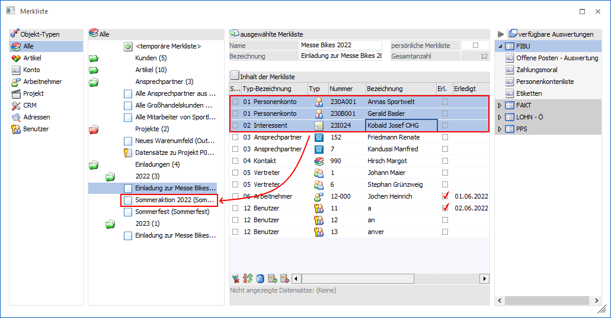
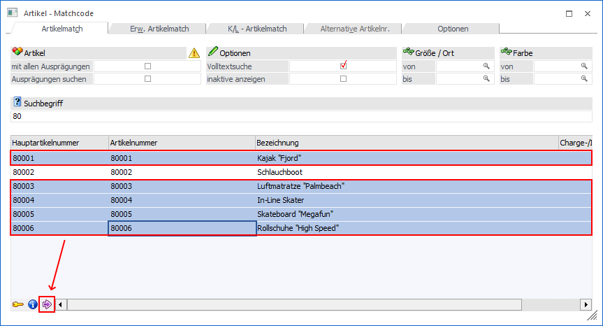
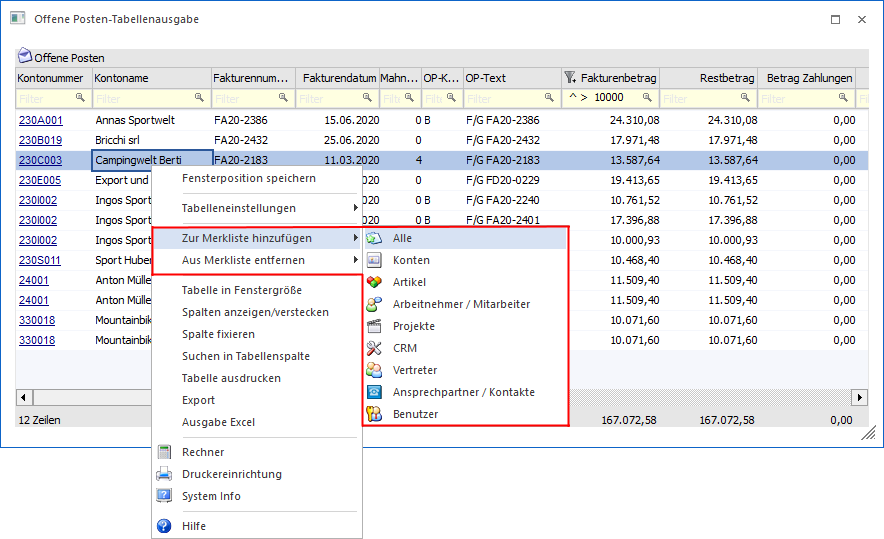
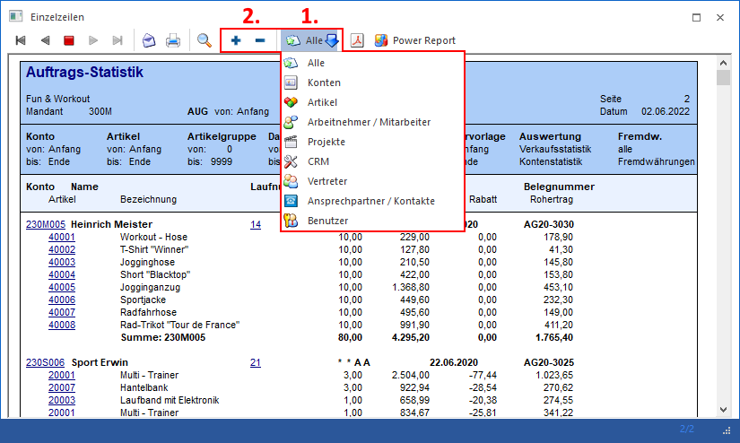
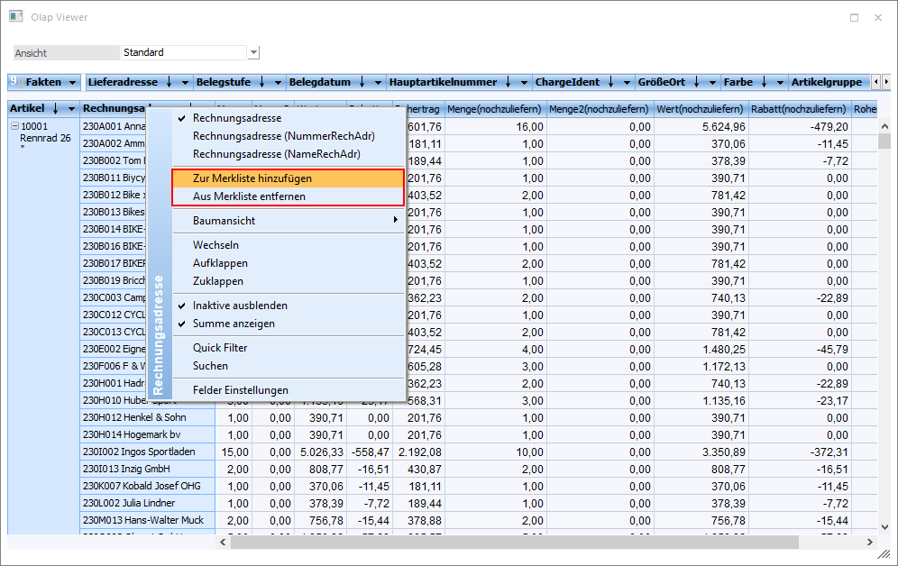

Es gibt mehrere Möglichkeiten, wie eine Merkliste angelegt werden kann:
Fenster "Merkliste" - Button "neue Merkliste"
Im Fenster Merkliste kann durch Anwahl des Button "neue Merkliste" eine neue Merkliste erzeugt werden. Details zum Merklisten-Fenster können dem Kapitel Verwaltung von Merklisten entnommen werden.
Fenster "Merkliste" - Drag & Drop
Im Fenster Merkliste können Datensätze von einer auf eine andere Merkliste gezogen werden. Hierfür werden einfach die gewünschten Datensätze der Merkliste markiert und per Drag & Drop auf eine andere existierende Merkliste gezogen.

Die neuen Datensätze werden in der Ziel-Merkliste bei dieser Vorgehensweise direkt gespeichert.
Fenster "Namen suchen" / "CRM Daten Cockpit" / Kampagnen" - Fensterbuttons
In den Fenstern Namen suchen, "CRM Daten Cockpit" und Kampagnen stehen jeweils die Buttons "Auswahl in eine Merkliste / Kampagne kopieren" bzw. "Auswahl aus einer existierenden Merkliste / Kampagne entfernen" zur Verfügung.
Durch Anwahl der Buttons können die selektierten bzw. markierten Datensätze mit Hilfe des Programms Kampagne/Merkliste verändern in eine neue bzw. bestehende Merkliste kopiert oder entfernt werden.
Matchcode - Button "in Merkliste ablegen"
Mit Hilfe des Tabellenbuttons "in Merkliste ablegen" können Datensätze aus ausgewählten Matchcode direkt in die Merkliste übergeben werden. Der Button steht dabei in folgenden Fenster zur Verfügung:
ü Konten - Matchcode
Es können
Datensätze der Typen "Personenkonto", "Interessent" und "Sachkonto" übergeben
werden.
ü Arbeitnehmerstamm -
Matchcode
Es können Datensätze des Typs "Arbeitnehmer" übergeben werden.
ü Artikel - Matchcode
Es können
Datensätze des Typs "Artikel" übergeben werden.
ü Projektmatchcode
Es können
Datensätze des Typs "Projekt" übergeben werden.
ü CRM-Suche
Es können Datensätze
des Typs "CRM" übergeben werden.
Der Ablauf ist dabei immer ident. Es wird zunächst der jeweilige Matchcode geöffnet und nach den Datensätzen gesucht, welche übergeben werden sollen.

Im Matchcode erfolgt dann über eine Zeilenmarkierung die Auswahl, welche Zeilen übergeben werden sollen. Abschließend wird der Tabellenbutton "in Merkliste ablegen" gedrückt.
Danach werden alle markierten Datensätze im Fenster "Merkliste" als "temporäre Merkliste" angezeigt. Durch Hinterlegung eines individuellen Namens kann die Merkliste dann gespeichert werden.
Hinweis
Die Matchcodes können auch aus der Tabelle "Inhalt der Merkliste" heraus geöffnet werden. In solch einem Fall erfolgt die Übergabe der Datensätze direkt in die aktuelle Merkliste.
WinLine Tabelle - Kontextmenü
In allen WinLine Tabellen stehen im Kontextmenü die Funktionen "Zur Merkliste hinzufügen" und "Aus Merkliste entfernen" zur Verfügung. Mit Hilfe eines Untermenüs kann dabei entschieden werden, welche Datentypen aus der Tabelle ausgelesen und übergeben bzw. entfernt werden sollen.

Folgende Punkte sind hierbei zu beachten:
ü Die Funktionen stehen in Tabellen des WinLine ADMINs und der WinLine mobile nicht zur Verfügung.
ü Es werden die Datentypen immer aus den sichtbaren Zeilen ausgelesen. D.h. wurden Zeilen z.B. via Spaltenfilter ausgeblendet, so werden die Inhalte dieser Zeilen nicht berücksichtigt.
ü Die WinLine bestimmt über eine interne Matrix, um was für einen Datentyp es sich bei der Spalte "x" handelt. Nur weil der Name einer Spalte z.B. "Konto" lautet, heißt dieses nicht, dass dieses für die Übergabe ein z.B. "Personenkonto" ist.
ü Die Übergabe in bzw. aus der Merkliste erfolgt mit Hilfe des Programms Kampagne/Merkliste verändern.
Druckvorschau - Fensterbuttons
In der Druckvorschau stehen grundsätzlich die Buttons " - zur Merkliste/Kampagne dazugeben" und " - aus Merkliste/Kampagne entfernen" zur Verfügung. Abhängig davon, ob Datensätze über eine Merkliste / Kampagne in der Ausgabe vorhanden sind, werden die Button freigeschaltet.

Zunächst wird entschieden, welcher Datentyp berücksichtigt werden soll. Hierbei stehen alle Typen einer Merkliste zur Verfügung. Wird ein Typ gewählt, dessen Variablen im Druck nicht vorkommt, so springt die Auswahl auf den ersten möglichen. Abschließend wird entschieden, ob die Datensätze übergeben oder entfernt werden soll. Zusätzlich sind folgende Punkte hierbei zu beachten:
ü Die Buttons bzw. die Funktion stehen im WinLine ADMIN und der WinLine mobile nicht zur Verfügung.
ü Die WinLine bestimmt über eine interne Matrix, um was für einen Datentyp es sich bei der Variable "x" handelt. Nur weil der Name einer Variable z.B. "Konto" lautet oder ein entsprechender DrillDown definiert wurde, heißt dieses nicht, dass dieses für die Übergabe ein z.B. "Personenkonto" ist.
ü Die Übergabe in bzw. aus der Merkliste / Kampagne erfolgt mit Hilfe des Programms Kampagne/Merkliste verändern.
Olap Viewer - Kontextmenü
Im Olap Viewer stehen im Kontextmenü von Dimensionen die Funktionen "Zur Merkliste hinzugeben" und "Aus Merkliste entfernen" zur Verfügung.

Folgende Punkte sind hierbei zu beachten:
ü Es werden die Datensätze immer aus den sichtbaren Zeilen ausgelesen. D.h. wurden Zeilen z.B. via Quick Filter ausgeblendet, so werden die Inhalte dieser Zeilen nicht berücksichtigt.
ü Die WinLine bestimmt über eine interne Matrix, um was für einen Datentyp es sich bei der Dimension "x" handelt und stellt die Funktionen zur Verfügung. Nur weil der Name einer Dimension z.B. "Konto" lautet, heißt dieses nicht, dass dieses für die Übergabe ein z.B. "Personenkonto" ist.
ü Die Übergabe in bzw. aus der Merkliste erfolgt mit Hilfe des Programms Kampagne/Merkliste verändern.